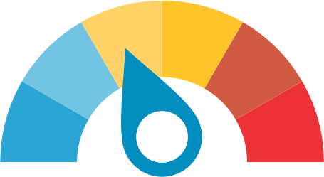

Skin Doctor ( Prototype )
Take a look of how Skin Doctor will work! Take a picture of anything and see how Skin Doctor will work. No picture will be saved or send to our backends. This is a Prototype

43%
This percentage will be based on Watson knowledge about moles.